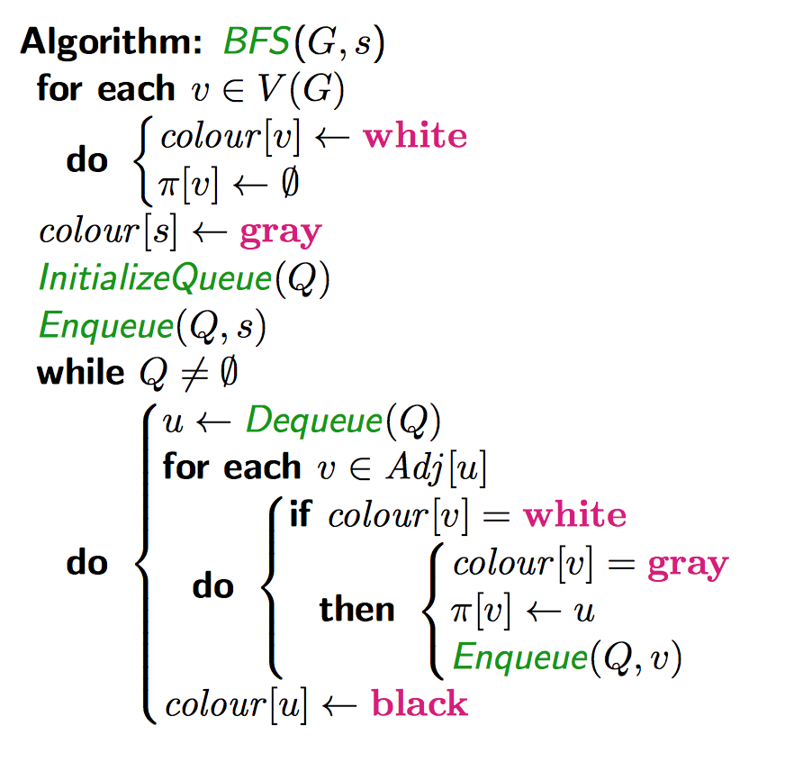
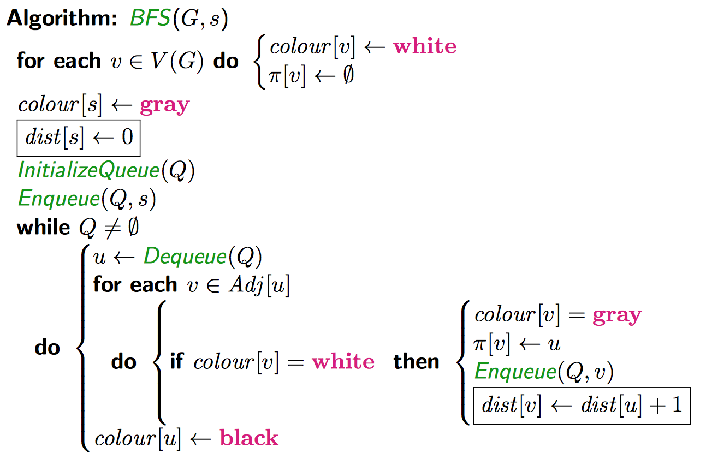
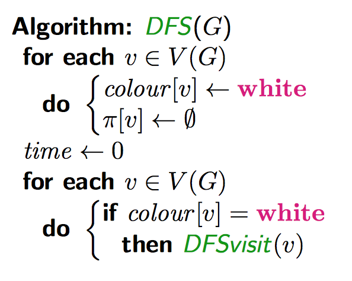
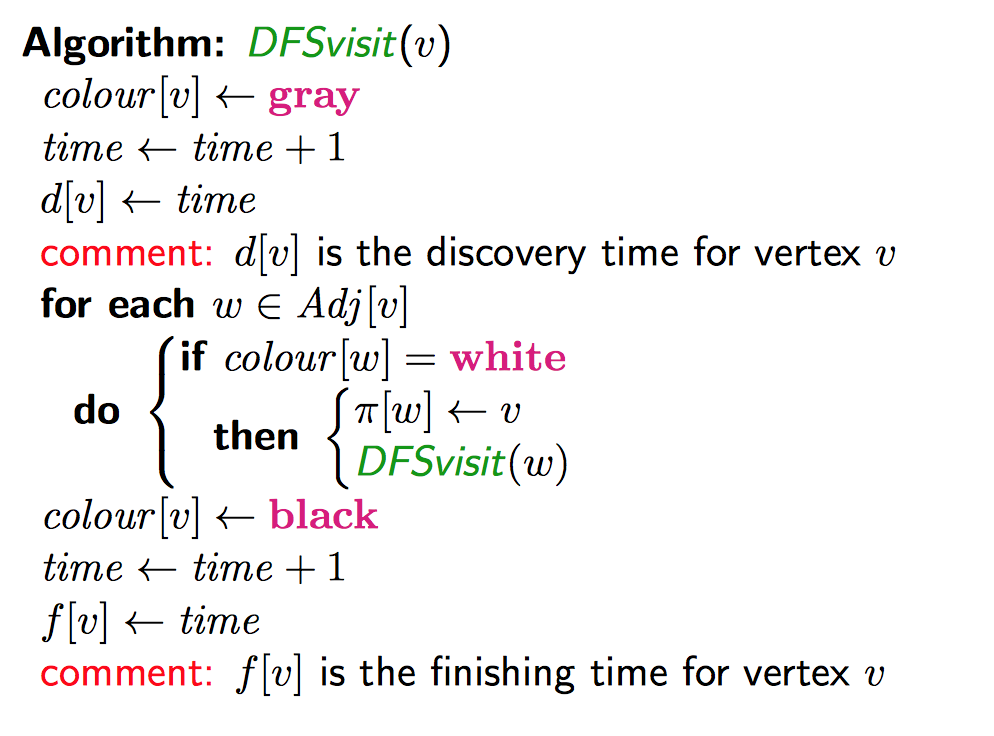
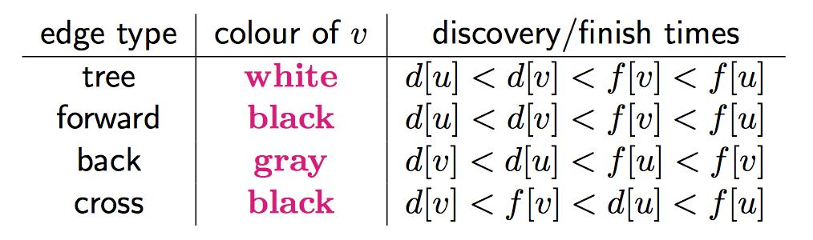
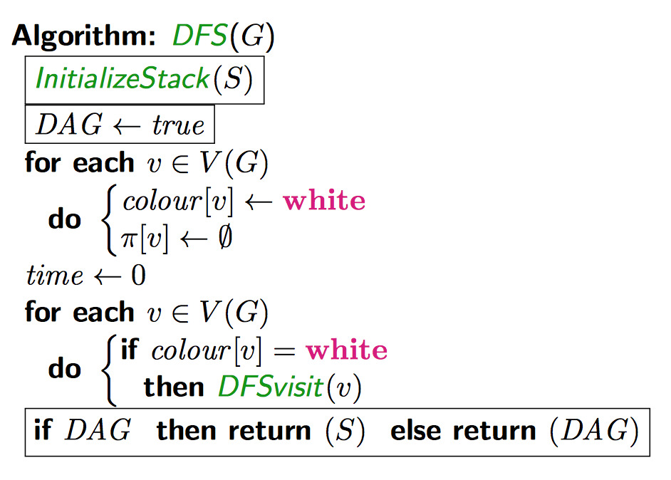
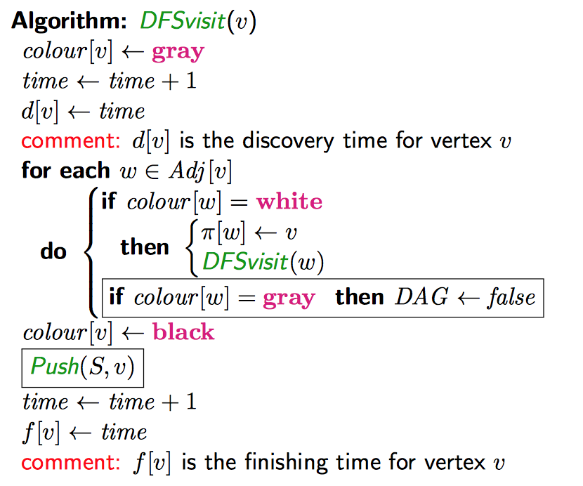
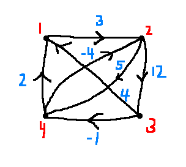

In general, we call the number of vertices \(n\) and the number of edges \(m\). Edges \(E\) consist of sets of two vertices \(\{u,w\}, u \ne w\). The number of edges \(m \le \binom{n}{2}\). A graph can be defined as vertices and edges, \(G=(V,E)\).
A Directed graph or digraph has edges (called arcs in this case) as an ordered pair \((u,w)\) instead of a set, with the arrow going from the tail \(u\) to the head \(w\).
\(m \le n^2\).
The adjacency matrix of a graph \(G\) is an \(n \times n\) matrix \(A=(a_{u,v})\), which is indexed by \(V\), such that:
\[a_{u,v} = \begin{cases}
1, &\{u,v\} \in E\\
0, &\text{otherwise}
\end{cases}\]
There are exactly \(2m\) etries in \(A\) equal to 1.
If \(G\) is a digraph, then:
\[a_{u,v}=\begin{cases}
1, &(u,v) \in E\\
0, &\text{otherwise}
\end{cases}\]
Storage requirement: \(O(n^2)\).
The adjacency list of \(G\) is \(n\) linked lists. For every \(u \in V\), there is a linked list named \(Adj[u]\).
For every \(v \in V\) such that \(uv \in E\), there is a node in \(Adj[u]\) labelled \(v\) (for both graphs and digraphs).
In an undirected graph, every edge \(uv\) corresponds to a node in two linked lists: for edge \(uv, \exists v \in Adj[u]\) and \(\exists u \in Adj[v]\).
In a directed graph, every edge corresponds to a node in only one adjacency list.


The shortest path from \(s\) (the source) to some other vertex \(v\):
\(v, \pi[v], \pi[\pi[v]], \pi[\pi[\pi[v]]], ...\)
Runtime
If \(u\) is discovered before \(v\), then \(dist[u] \le dist[v]\)
Suppose \(u\) is discovered before \(v\), but \(dist[u] \gt dist[v]\). Let \(dist[u]=d\), so \(dist[v] \le d-1\).
With no loss of generality, choose the first pair of vertices where this happens, so let \(\pi[u]=u_1, \pi[v]=v_1\). Then:
\[\begin{align*}
d=dist[u]=dist[u_1]+1 &\rightarrow dist[u_1]=d-1\\
d-1 \ge dist[v]=dist[v_1]+1 &\rightarrow dist[v_1]\le d-2 \lt dist[u_1]
\end{align*}\]
So \(v_1\) was discovered before \(u_1\). This implies that \(Adj[v_1]\) was processed before \(Adj[u_1]\). This only happens if \(v\) was discovered before \(u\). This is a contradiction, so therefore if \(u\) is discovered before \(v\), then \(dist[u] \le dist[v]\).
If \(\{u,v\}\) is any edge, then \(|dist[u]-dist[v]| \le 1\)
Suppose \(u\) is discovered before \(v\) without any loss of generality. Then we are processing \(Adj[u]\) when we encounter \(v\) in the adjacency list. Then, we have three cases:
For the second case, let \(\pi[v]=v_1\). This tells us that \(dist[v]=dist[v_1]+1\) (1). So \(v\) was discovered when \(Adj[v_1]\) was being processed. Therefore \(v_1\) was discovered before \(u\). This tells us that \(dist[v_1] \le dist[u]\) (2). Finally, \(u\) was discovered before \(v\) from our assumption, so Lemma 1 says that \(dist[u] \le dist[v]\). (3). From (1), (2), and (3), we can say that \(|dist[u]-dist[v]| \le 1\).
\(dist[v]\) is the length of the shortest path from \(s\) to \(v\)
Let \(\delta(v)\) be the lenfth of the shortest path from \(s\) to \(v\). We want to prove that \(\delta(v) = dist[v]\). We will prove \(\delta(v) \le dist[v]\) and \(\delta(v) \ge dist[v]\).
Consider the path \(v, \pi[v], \pi[\pi[v]], ..., s\). This is a path from \(s\) to \(v\) having length \(dist[v]\). Therefore \(\delta(v) \le dist[v]\).
We prove \(\delta(v) \ge dist[v]\) by induction in \(\delta(v)\).
Base case: \(\delta(v) = 0 \rightarrow s=v\). We know \(dist[s]=0\), so \(dist[v]=\delta(v)\).
Assumption: Suppose the inequality is true for \(\delta(v) \le d-1\).
Consider \(v\) such that \(\delta(v)=d\). Let \(S, v_1, v_2, ..., v_{d-1}, v_d = v\) be the shortest path from \(s\) to \(v\) (length is \(d\)). The section from \(s\) to \(v_{d-1}\) is a shortest path. By induction, \(d-1=\delta(v_{d-1})=dist[v_{d-1}]\).
A graph is bipartite if the vertex set can be partitioned as \(V=X \cup Y\) such that all the edges have one end point in \(X\) and one in \(Y\). This is the case if and only if there is not an odd cycle in the graph.
We can use BFS to test if a graph is bipartite.
Suppose \(G\) is not bipartite (and assume it is connected). Let \(s\) be any vertex.
Define \(X=\{v : dist[v] \text{ is even}\}, Y=\{v: dist[v] \text{ is odd}\).
Since \(G\) is not bipartite, there is an edge \(uv\) where \(u,v \in X\) or \(u,v \in Y\). There is an edge \(uv\) where \(dist[u]\) and \(dist[v]\) are both even or both odd. Since \(|dist[u]-dist[v]| \le 1\), we have \(dist[u]=dist[v]\). How do we find an odd cycle?
Given a connected graph, we can use BFS to either:
Run BFS. IF we ever encounter \(v \in Adj[u]\) where \(dist[u] = dist[v]\), then we can construct an odd cycle. If this doesn't happen, then \(X,Y\) will be a bipartition.


Given \(uv\):

Note that the intervals \((d[u], f[u])\) and \((d[v], f[v])\) never overlap. Two intervals are either disjoint or nested. This is called the parenthesis theorem.
A directed graph \(G\) is a directed acyclic graph (DAG) if \(G\) contains no directed cycle.
A directed graph \(G=(V,E)\) has a topological ordering, or topological sort if there is a linear ordering of all the vertices in \(V\) such that \(u \lt v\) whenever \(uv \in E\).
Lemma. A DAG contains a vertex of indegree 0.
Suppose there are no vertices od indegree 0. Pick any vertex \(v_1\). There must always be an edge going into it, so there is an edge \(v_2 v_1\) There is also an edge \(v_3 v_2\). You can keep finding edges like this infinitely, and since there are not infinite points, there must therefore be a repatition. Therefore there is a directed cycle in the graph.
Theorem. A directed graph \(D\) has a topological ordering iff it is a DAG.
Suppose \(D\) has a directed cycle. Then, \(v_1 \lt v_2 \lt ... \lt v_j \lt ... \lt v_!\). This is not a linear ordering.
Suppose \(D\) is a DAG. Let \(v_1\) be a vertex of indegree 0. This will be the first vertex in the ordering.


We find a topoligical sort "efficiently" (\(O(m+n)\)) without using DFS using Kahn's Algorithm.
Using an adjacency list representation:
Lemma. \(G\) is a DAG iff there are no back edges in a DFS.
Proof. A back edge implies a directed cycle. Conversely: Assume there is a directed cycle.
Let \(v_1v_2, ..., v_lv_1\) be a directed cycle. Suppose \(v_1\) is disconnected first. We calim \(v_lv_1\) is a back edge: \(d(v_l) \gt d(v_1)\), so from the chart, \(v_lv_1\) is a back edge or a cross edge. But can it be a cross edge? If it was, then \(v_1\) would be black when \(v_lv_1\) is processed (from the chart). But \(v_1\) is not black at the time, it's grey, so \(v_lv_1\) is a backk edge.
Given that there are no back edges, the topological ordering is given by the vertuces in reverse order of finishing time. Why? Look at the chart: for any edge \(uv\) that is not a back edge, \(f[u] \gt f[v]\) (\(f\) is finishing time).
For two vertices \(x\) and \(y\) of digraph \(G\), define \(x \sim y\) as \(x=y\) or \(x \ne y\) and there exists directed paths from \(x\) to \(y\) and \(y\) to \(x\).
The relation \(~\) is an equivalence relation. The strongly connected components of \(G\) are the equivalence classes of vertices defined by the relation \(\sim\).
The component graph of \(G\) is a directed graph whose vertices are strongly connected components of \(G\). There is an arc from \(C_i\) to \(C_j\) iff there is an arc in \(G\) from some \(v \in C_i\) to some \(u \in C_j\). For a stringly connected component \(C\), define \(f[C]=\max\{f[v] : v \in C\}\) and \(d[C]=\min\{d[v] : v \in C\}\)
Useful facts:
First consider the undirected version of the problem. We can use DFS to solve the undirected problem. Each initial call to DFSVisit will "explore" a connected component. THe recursive calls to DFSVisit are the other vertices in the same component.
Lemma. If there is an edge \(C_iC_j\) in the component graph, then \(f(C_i) \gt f(C_j)\).
Proof.
Case 1: \(d(C_i) \lt d(C_j)\)
Case 2: \(d(C_i) \gt d(C_j)\)
For case 2, we explore everything in \(C_j\) before any vertex in \(C_i\) is explored. So, \(f(C_i) \gt d(C_i) \gt f(G_j)\).
For case 1, let \(u \in C_i\) be the first discovered vertex. All vertices in \(C_i \cup C_j\) are reachable from \(u\), so they are all descendants of \(u\) in the DFS tree. So \(f(v) \lt f(u) \forall v \in C_i \cup C_j, u \ne v\), and therefore \(f(C_i) \gt f(C_j)\).
Algorithm
def prim(G(V,E), weights) {
choose any s in V
let l = {S}
let r = V-{S}
let minWeightEdge be a priority queue storing, for all v in R, the weight of the edge (u,v) connecting v to l
T = {}
for i in 1..n {
(v, (u,v)) = minWeightEdge.extractMin()
remove v from r
add v to l
add (u,v) to T
for each (v,z) in E such that z in R {
minWeightEdge.decrementKey(z, w[v,z])
}
}
return T
}A cut on an edge divides a graph into sections if that edge was removed.
Kruskal's Algorithm is another algorithm to solve this
Looking for the path of minimum weight. Dijkstra's Algorithm solves this when there are no negative weight edges.
Bellman-Ford Algorithm (works with negative edges but not negative weight cycles)
Since there are no directed cycles, there are no negative weight directed cycles since there are no directed cycles
In a directed graph \(G=(V,E)\), and a weight matrix \(W\) where \(W[i,j]\) is the weight of edge \(ij\), for all pairs of vertices \(u,v, \in V, u \ne v\), find a directed path \(P\) from \(u\) to \(v\) such that:
\[w(P) = \sum_{ij \in P} W[i,j]\]
Run Bellman-Ford algorithm \(n\) times, once for each source. This is \(O(n^2m)\).
Let \(L_m[i,j]\) to be the minimum weight of an \((i,j)\) path having at most \(m\) edges. (We will look at \(L_{n-1}[i,j]\) to find the answer.) \(W[i,j]=0\) if \(i=j\).
Initially, \(L_1 = W\) (matrix of edge weights).
Let \(P\) be the min-weight \((i,j)\) path with less than or equal to \(m\) edges. Let \(k\) be the predecessor of \(j\) on \(P\). Let \(P'\) be the \((i,k)\)-path (delete \(j\) from \(P\)). \(P'\) is a min-weight \((i,k)\) path having \(\le m-1\) edges.
This gives us the recurrence relation:
\[L_m[i,j] = \min{L_{m-1}[i,k]+w[k,j] : 1 \le k \le n}\]
This is called "successive doubling"
The idea is to compute \(L_1, L_2, ..., L_{2^k}\) where \(2^k \ge n-1\) and each depends on the previous. There are then \(\Theta(\log n)\) matrices to compute.
\[L_m[i,j] = \min{L_\frac{m}{2}[i,k]+L_\frac{m}{2}[k,j] : 1 \le k \le n}\]
Let \(D_m[i,j]\) be the min weight of an \((i,j)\)-path where interior vertices are in \(\{1,...,m\}\). We want to compute \(D_n\).
Initially, \(D_0 = W\).
\[D_m[i,j] = \min{D_{m-1}[i,k], D_{m-1}[i,m], D_{m-1}[m,j]}\]
Is \(D_{m-1}[i,m] + D_{m-1}[m,j]\) the minimum weight path that contains \(m\) as an interior vertex? \(p_1, p_2\) are simple paths (no negative weight cycles.) Are \(p_1, p_2\) disjoint?
e.g.

\[D_0 = \begin{bmatrix} 0 & 3 & \infty & \infty \\ \infty & 0 & 12 & 5 \\ 4 & \infty & 0 & -1 \\ 2 & -4 & \infty & 0 \end{bmatrix}\]
\[\begin{align*} D_1[3,2]&=\min\{D_0[3,2], D_0[3,1] + D_1[1,2]\}\\ &= \min\{\infty, 4+3\}\\ &= 7 \end{align*}\]
\[D_1 = \begin{bmatrix} 0 & 3 & \infty & \infty \\ \infty & 0 & 12 & 5 \\ 4 & [7] & 0 & -1 \\ 2 & -4 & \infty & 0 \end{bmatrix}\]
\[D_2 = \begin{bmatrix} 0 & 3 & [15] & [8] \\ \infty & 0 & 12 & 5 \\ 4 & 7 & 0 & -1 \\ 2 & -4 & [8] & 0 \end{bmatrix}\]
\[D_3 = \begin{bmatrix} 0 & 3 & 15 & 8 \\ [16] & 0 & 12 & 5 \\ 4 & -7 & 0 & -1 \\ 2 & -4 & 8 & 0 \end{bmatrix}\]
\[D_4 = \begin{bmatrix} 0 & 3 & 15 & 8 \\ [7] & 0 & 12 & 5 \\ [1] & [-5] & 0 & -1 \\ 2 & -4 & 8 & 0 \end{bmatrix}\]